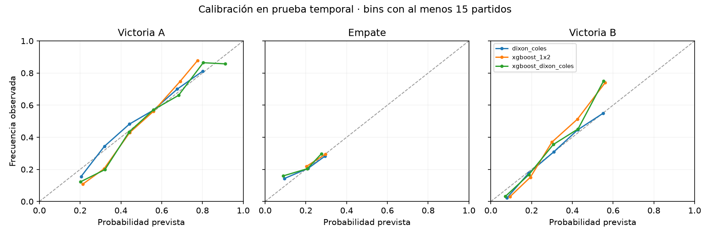

Datos locales · 0 simulaciones de torneosProbabilidades del Mundial 2026
Estudio retrospectivo de los 72 partidos de grupos. Probabilidades a 90 minutos, calculadas directamente desde modelos de goles o un clasificador de tres clases.
Corte exclusivo: 2026-06-10. No se descargaron datos. El histórico contiene partidos de 2026 programados sin resultados. Los participantes de repechajes se resolvieron con ese calendario local; su disponibilidad histórica no está certificada.
Todos los partidos del filtro
Evaluación independiente
Prueba: 2023 hasta el corte. Selección del modelo de marcadores: verosimilitud de 2022. Estas métricas corresponden a modelos congelados del backtest, no a los modelos posteriormente reentrenados para el fixture. Menor log loss, Brier y NLL es mejor. Brier multiclase sin dividir entre dos.

Qué significan las cifras
Metodología y límites
- Las probabilidades son condicionales al rival, sede y datos disponibles; no son probabilidades de ser campeón.
- Los cinco marcadores mostrados no cubren toda la distribución. Se exporta la matriz completa en CSV.
- Entrenamiento conservador: amistosos (supuestos a 90 minutos) y Mundiales masculinos con goles de prórroga descontados mediante eventos locales. Otras competiciones se excluyen por duración no verificada.
- XGBoost aprende tasas de goles y, en un modelo separado, probabilidades 1X2. Las tasas previstas no son xG de calidad de tiros.
- Dixon-Coles ajusta cuatro marcadores bajos. El híbrido con tasas XGBoost es un experimento propio.
- El reporte carga resultados precomputados. No entrena ni simula al abrirlo.
Partidos CSV · Perspectivas por equipo · Marcadores CSV · Auditoría